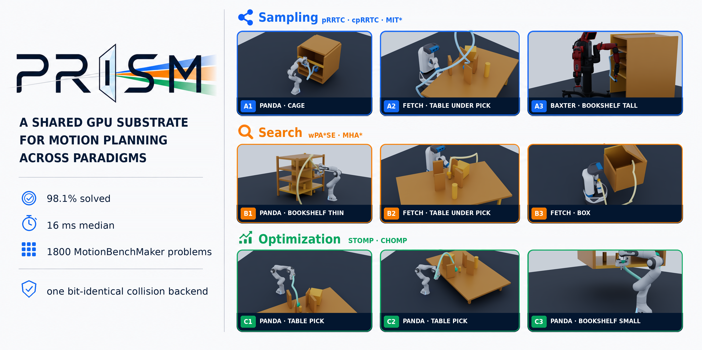
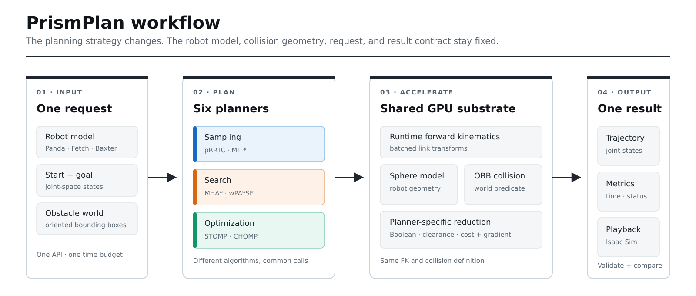
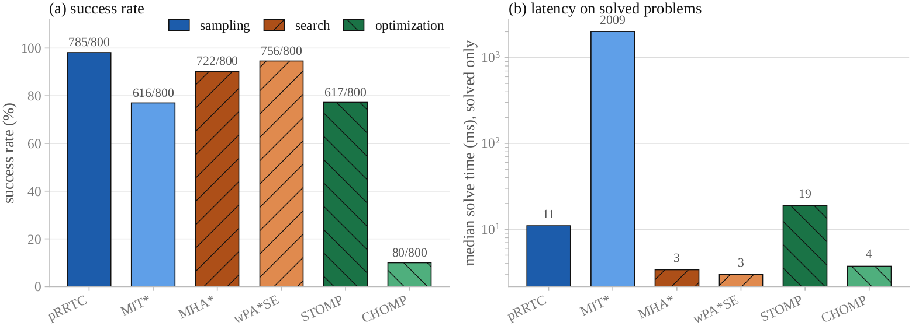
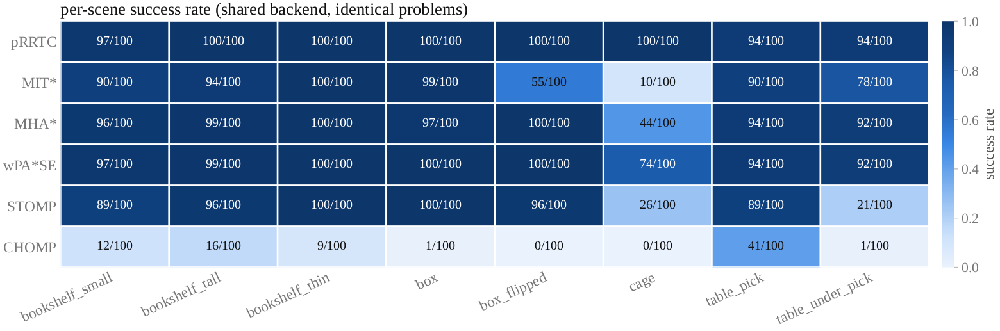

A shared GPU substrate for motion planning across paradigms
PrismPlan exposes six planners through one runtime robot interface and reduces their collision and forward-kinematics workloads onto shared batched GPU primitives — so cross-paradigm comparisons measure planners, not backends.

Highlights
One substrate, three paradigms, six first-class planners.
One substrate, three paradigms
Sampling, search, and optimization share the same per-sphere geometry and runtime kinematics substrate.
Six first-class planners
pRRTC, MIT*, MHA*, wPA*SE, STOMP, and CHOMP use a common problem description and result interface.
Runtime robot models
The same planner binaries run Panda (7 DoF), Fetch (8 DoF), and a whole-body Baxter composite (14 DoF) without planner-specific recompilation.
Backend-fixed benchmarking
Every planner receives the same start/goal pair, OBB scene, and collision model; --budget-ms sets one wall-clock budget for all six.
Simulation-ready outputs
Saved trajectories replay in Isaac Sim; the repository ships reviewed multi-scene demos.
Reproducible protocol
The runner records the requested budget in summary.config.budget_ms, and provenance for the reference runs is documented.
How it works
A shared planning request flows through six planners and one GPU collision–kinematics substrate.

All planners share the runtime FK and per-sphere collision geometry. Sampling and search reduce it to an any-collision predicate; the anytime sampler uses a minimum-clearance reduction; STOMP and CHOMP use summed-hinge costs and gradients built from the same geometry. This distinction is intentional: an optimizer needs a graded signal, while a feasibility planner needs a Boolean decision.
| Planner | Paradigm | Execution model | Practical role |
|---|---|---|---|
| pRRTC | sampling | GPU-parallel tree extension | High feasibility and high-dimensional robustness |
| MIT* | anytime-optimal sampling | GPU collision/FK primitives | Trades the time budget for shorter paths |
| MHA* | heuristic search | CPU open lists, GPU batched edge checks | Multiple complementary heuristics |
| wPA*SE | parallel bounded-suboptimal search | CPU search, GPU batched edge checks | Low median latency and a suboptimality bound |
| STOMP | derivative-free optimization | GPU-batched rollouts and costs | Local trajectory refinement without gradients |
| CHOMP | gradient-based optimization | Shared differentiable obstacle cost | Smooth local optimization from a useful seed |
MHA* and wPA*SE are hybrid CPU/GPU planners, not fully GPU-resident search implementations.
Results at a glance
800 MotionBenchMaker Panda problems · one RTX 3060 · an equal 2 s wall-clock budget per planner and problem.
Fifteen requests have a goal already in collision; the overall success denominator retains them, while “feasible success” excludes them. The figures use the paper's mbm_800_flag run; see benchmark provenance and reproduction.

pRRTC solves 785/800 problems (98.1%, all 785 feasible requests); wPA*SE solves 756/800 (94.5%) with a 3.0 ms median on solved requests, compared with pRRTC's 11.0 ms. These medians cover each planner's own solved subset. The per-scene view shows where the paradigms separate: cage is the strongest discriminator, while table_under_pick is especially difficult for unseeded local optimizers.

Isaac Sim demos
Eighteen time-parameterized trajectories across sampling, search, and optimization planners on Panda, Fetch, and Baxter.
The 52-second overview opens with nine trajectories, then shows Panda, Fetch, and Baxter in sequence, each with three scenes playing simultaneously in a three-panel layout.
Overview (52 s) · Full demo (2 min 9 s)
The full demo presents the first nine trajectories individually, followed by the same three views of Panda, Fetch, and Baxter, each showing three scenes simultaneously.
Isaac Sim is used for state and trajectory visualization. Benchmark timings and planner collision decisions come from PrismPlan; they are not Isaac physics-step timings.
Quickstart
Build the CUDA substrate, then drive all six planners from Python.
Requirements
- Linux with a CUDA-capable NVIDIA GPU
- CMake 3.16 or newer, a C++17 compiler, and the CUDA toolkit with
nvcc - Eigen3 and pybind11 (2.13.6, including for Python 3.12)
- Python 3 with NumPy, PyYAML, CUDA-enabled PyTorch, and Matplotlib
The default CUDA architecture is 86 (Ampere). Override CMAKE_CUDA_ARCHITECTURES for another GPU; for example, use 120 for an RTX 5060 Ti with CUDA 13.2.
Build
python3 -m pip install pybind11==2.13.6
cd code/gpu_planning
cmake -S cpp -B cpp/build \
-DCMAKE_BUILD_TYPE=Release \
-DPYTHON_EXECUTABLE="$(command -v python3)" \
-Dpybind11_DIR="$(python3 -m pybind11 --cmakedir)" \
-DCMAKE_CUDA_ARCHITECTURES=86
cmake --build cpp/build --parallel
export PYTHONPATH="$PWD/python:$PWD/cpp/build:${PYTHONPATH:-}"
python3 examples/bench_6way.py --device cudaMinimal Python example
from gpu_planning import PRRTCPlanner, PlanningRequest, PlanningScene
scene = PlanningScene.from_robot_asset("config/robots/panda.yaml", device="cuda")
scene.add_cuboid("table", dims=(1.2, 1.2, 0.05), position=(0.5, 0.0, -0.1))
scene.add_cuboid("box", dims=(0.1, 0.1, 0.4), position=(0.45, -0.2, 0.5))
start = [0.0, -0.785, 0.0, -2.356, 0.0, 1.571, 0.785]
goal = [0.6, 0.35, -0.4, -1.9, 0.25, 1.95, 0.9]
planner = PRRTCPlanner()
planner.set_time_budget_ms(2000)
if not planner.initialize(scene, asset_path="config/robots/panda.yaml"):
raise RuntimeError("Planner initialization failed; check the prrtc build and CUDA environment")
try:
result = planner.plan(PlanningRequest(
robot_id="panda",
start_joint_state=start,
target_joint_state=goal,
))
finally:
planner.shutdown()
print(result.success, result.status, result.solve_time, result.trajectory)Run the benchmark
The runner emits trials.csv and summary.json, recording the requested budget in summary.config.budget_ms. Pass --budget-ms 2000 for the equal-budget comparison; without it, YAML defaults give pRRTC 4000 ms and the other planners 1000 ms. The bundled sample dataset checks the workflow and does not reproduce the 800-problem result.
cd code/gpu_planning
python3 examples/bench_mbm.py \
--source vamp \
--path examples/data/sample_mbm_problems.json \
--budget-ms 2000 --trials 1 \
--out results/sample
python3 examples/plot_mbm.py \
--indir results/sample \
--outdir results/sample/figuresFor the full Panda benchmark, install fishbotics/robometrics, which supplies the MotionBenchMaker datasets — the unrelated PyPI package of the same name does not provide robometrics.datasets. Details are in the benchmark notes.
Repository layout
PrismPlan/
├── code/gpu_planning/
│ ├── cpp/ # CUDA/C++ substrate and pybind module
│ ├── python/gpu_planning/ # unified Python interface and planner plugins
│ ├── config/ # robot and planner configurations
│ ├── examples/ # demos, benchmarks, and plotting tools
│ ├── ros2/ # messages and ROS 2 planner node
│ ├── tests/ # loader, benchmark, and validation checks
│ └── tools/ # dataset and robot-asset utilities
└── docs/assets/ # README figures and reviewed demo mediaCitation and license
@misc{prismplan,
author = {Wu, Hong and Liu, ChaoXuan and Wang, ShuJie},
title = {PrismPlan: A Shared GPU Substrate for Motion Planning Across Paradigms},
year = {2026},
note = {Research software and manuscript}
}The implementation is licensed under the Apache License 2.0. See the accompanying NOTICE for source provenance.